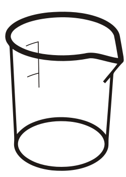

Using RDKit
without RDKit

Beaker update
Michał Nowotka
ChEMBL Group
EMBL-EBI
What is Beaker?
Remote RDKit (and OSRA) accessible over HTTP from the Internet or locally.
Can you be more specific?
- A lightweight web framework
- Written in Python
- Based on Bottle
- Exposing REST API
- Providing cheminformatics services
- Easy to extend and modify
What has changed?
- Beaker was first presented a year ago
- It's not a pet project anymore
- Production ready
- In fact, used in production already!
What's new then?
- Live online documentation
- Better configuration
- Caching system
- Throttling system
- Authentication
- Better security
- New methods
What's new then?
- mod_wsgi ready (Apache, NGINX)
- Python client library
- Development server improved
- Lots of bugfixes
- Easier to extend/write own methods
How to install it?
sudo pip install chembl_beaker
Can I use it without installing?
Yes!
Yes!!
Yes!!!
Beaker availability:
- PyPi (`pip install chembl_beaker`)
- myChEMBL
- online
Using Beaker from myChEMBL:
vagrant init chembl/myChEMBL
vagrant up
Using public instance of Beaker:
For Python, we provide a very convenient client library:
pip install chembl-webresource-client
Beaker client library:
- Caches results
- Generates methods from SPORE specs
- By default uses public instance of Beaker...
- ... but can be configured
- Described in 07_* my_ChEMBL python notebook
Potential use cases:
- Web widgets
- Mobile applications
- Desktop applications
- Ipython notebooks
- Fast prototyping
- Marvin 4 JS backend
Caching backends:
- MongoDB (for production)
- Memcached (for production)
- SQLite (for testing)
- Local memory (for testing)
- Your own?
Authentication:
- IP based
- API Key
- Your own?
Security:
- Cross-origin requests controlled
- Rate limiting (DDOS)
- No persistence, no SQL injection
- URL-safe base64 encoding for url parameters
- IP white/black listing
- Maximum file upload size (configurable)
Future
- Sessions
- Parallel processing
- More support for creating pipelines...
- ...KNIME like web interface?
- Windows binary
- ReadTheDocs documentation and separate website
- Improved live docs